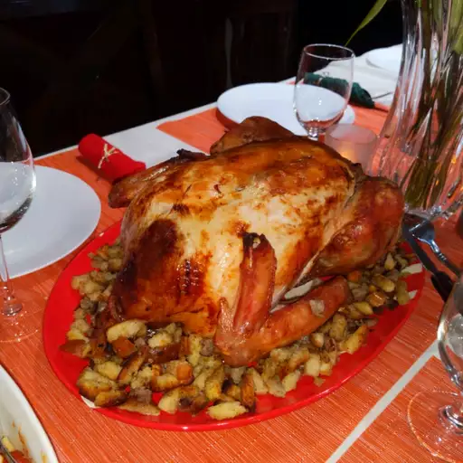

The Perfect Turkey Recipe

Description
Prep Time: 30 mins | Cook Time: 4 hrs | Additional Time: 12 hrs 30 mins
Total Time: 17 hrs | Servings: 24 | Yield: 1 (18lb) turkey
Ingredients
- 1 (18 pound) whole turkey, neck and giblets removed
- 2 cups kosher salt
- ½ cup butter, melted, divided
- 2 large onions, chopped, divided
- 4 carrots, coarsely chopped, divided
- 4 stalks celery, chopped, divided
- 2 sprigs fresh thyme, divided
- 1 bay leaf
- 1 cup dry white wine
Directions
- Rub turkey inside and out with kosher salt; place in a large stockpot and cover with cold water. Cover and refrigerate to allow turkey to soak in brine solution for 12 hours, or overnight.
- Preheat the oven to 350 degrees F (175 degrees C). Thoroughly rinse the turkey; discard the brine mixture.
- Brush turkey with 1/2 of the melted butter. Place breast-side down on a roasting rack in a shallow roasting pan. Stuff turkey cavity with 1/2 the onion, 1/2 the carrots, 1/2 the celery, 1 sprig of thyme, and bay leaf. Scatter remaining vegetables and thyme in the bottom of the roasting pan; pour white wine over vegetables.
- Roast turkey in the preheated oven, uncovered, until no longer pink at the bone and the juices run clear, about 3 1/2 to 4 hours. Carefully turn turkey breast-side up about 2/3 through the roasting time, and brush with remaining butter. An instant-read thermometer inserted into the thickest part of the thigh, near the bone, should read 165 degrees F (74 degrees C).
- Allow turkey to rest for 30 minutes before carving.